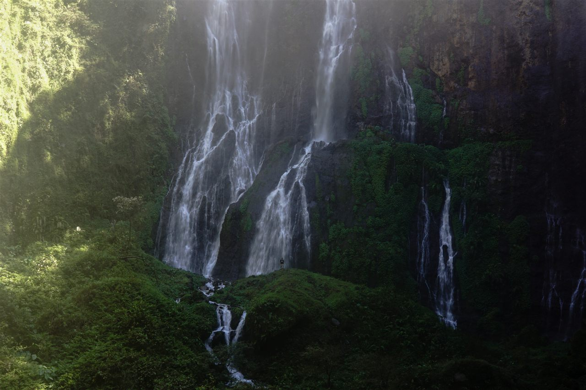
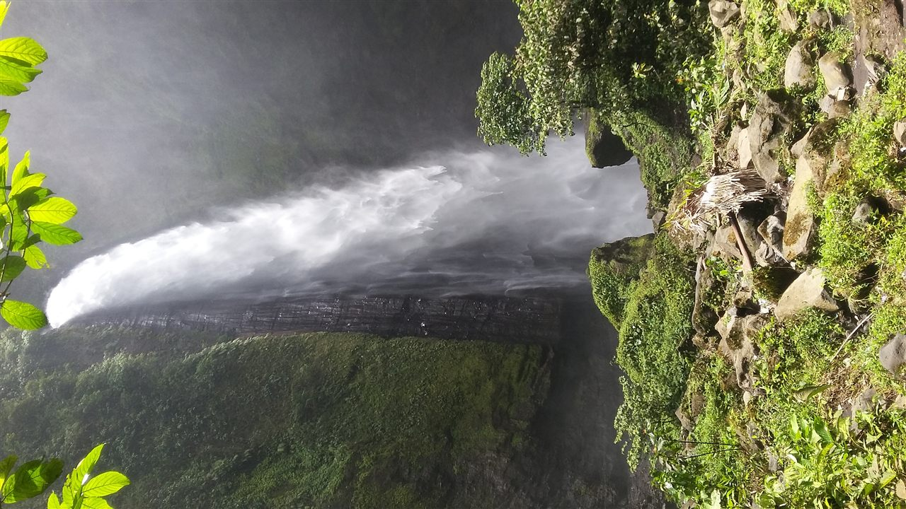
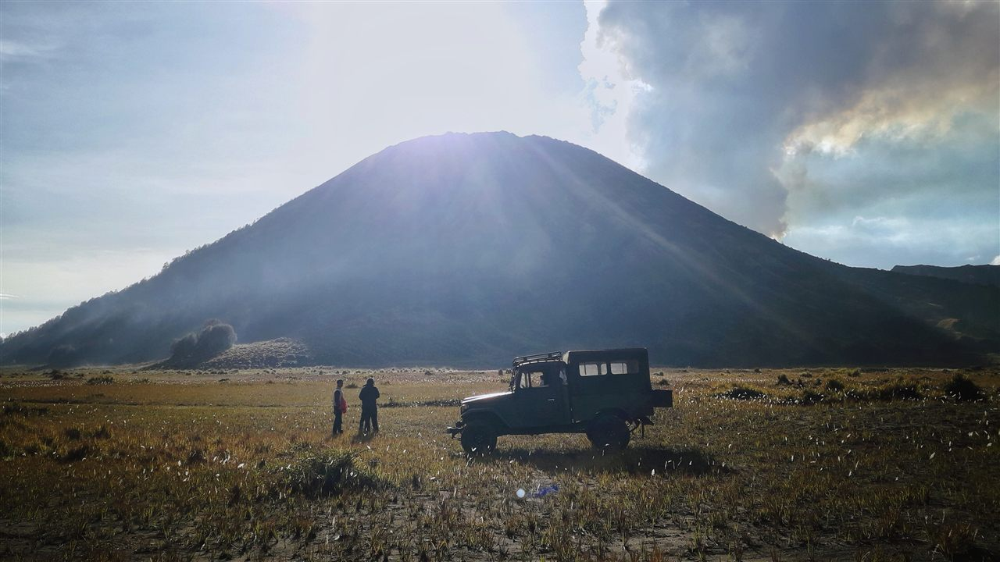
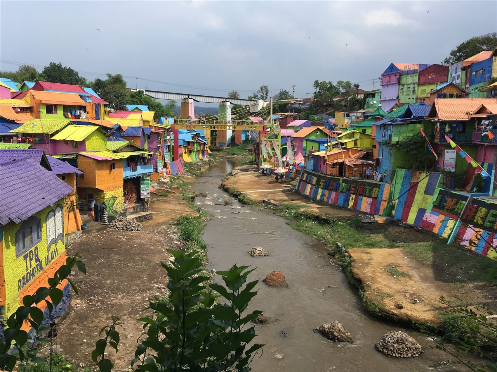

🏨 Hôtel/hostel — à réserver
Pas encore choisi. Vu le programme (arrivée en fin de journée le J1, retour d'une nuit blanche vers 10h le J3, sortie à pied l'après-midi du J3), privilégier un hostel proche de la gare de Malang et du centre-ville (Kajoetangan/Alun-alun) : c'est aussi lui qui organise les tours Tumpak Sewu et Bromo, donc son emplacement fixe le point de rendez-vous du pickup jeep.
Jour 2 — Tumpak Sewu & Kabut Pelangi
Tour partagé à la journée, retour à l'hostel en fin d'après-midi. Le soir même, départ jeep pour le Bromo.
🌿 Nature
🚙 Tour hostel

📷 Avrian Priyono, CC BY-SA
💦 Tumpak Sewunon négociable ★
🕐 07:00–17:00
🌿 Nature
💰 20 000 Rp/pers
🚗 Tour partagé depuis l'hostel
« Mille chutes » : un amphithéâtre de cascades de 120 m sous le volcan Semeru, la rivière Glidik qui plonge en dizaines de filets dans un canyon couvert de brume.
- 20 000 Rp/pers, même tarif pour visiteurs locaux et étrangers (tarif officiel du gouvernement de Lumajang) — rare, la plupart des sites de la région ont un tarif étranger plus élevé
- Parking en plus : 5 000 Rp (moto) / 10 000 Rp (voiture)
⚠️ Deux niveaux d'engagement bien distincts, à choisir en équipe : le point de vue du haut (accessible à tous, aucun effort) et la descente au fond du canyon par des échelles de bambou (~1h aller-retour, terrain glissant) — cette dernière à proposer en option sous-groupe, pas comme sortie de groupe par défaut, vu le profil réel de l'équipe.

📷 Deny Yudha Pranata, CC BY-SA
🌈 Kabut Pelangimême tour, en plus
🕐 à la suite de Tumpak Sewu
🌿 Nature
💰 inclus dans le tour
« La brume arc-en-ciel » : un seul jet de 100 m dans la jungle, à quinze minutes de Tumpak Sewu — beaucoup moins fréquenté.
⚠️ Pas de billetterie séparée trouvée — généralement inclus dans le forfait du tour Tumpak Sewu vendu par les hostels de Malang. Tarifs de ces tours très variables selon l'opérateur et le nombre d'arrêts (de ~35€/pers pour un tour partagé simple à plus de 100$/pers pour une formule combinée avec Goa Tetes) — comparer avant de réserver, aucun prix officiel fixe.
⚠️ Aucune demi-journée tampon entre cette journée et le Bromo (départ jeep 23h30 le soir même) — ça déroge à notre règle habituelle "gros projet = demi-journées voisines off", mais c'est le combo standard vendu par les hostels de Malang (transport partagé efficace). Gardé tel quel sur demande explicite plutôt qu'étalé sur plus de jours. Prévoir une sieste en fin d'après-midi avant le départ de 23h30.
Jour 3 — Bromo, puis la ville
Jeep parti à 23h30 la veille, retour à l'hostel vers 10h, sieste, puis sortie à pied l'après-midi.
🌿 Nature
🚙 Tour hostel

📷 Ake Widyastomo Putro, CC BY-SA
⛰️ Mont Bromonon négociable ★
🕐 Départ 23h30, sunrise ~05h20
🌿 Nature
💰 220k-320k Rp (semaine/weekend)
🚙 Jeep, pickup à l'hostel
Départ dans le froid et la nuit, puis le soleil qui se lève sur une mer de nuages face aux volcans Bromo, Batok et Semeru. Ensuite la mer de sable et environ 250 marches jusqu'au bord du cratère qui gronde — à cheval pour qui préfère.
- ~5°C au point de vue : gants, bonnet, écharpe indispensables
- Cheval en option, mer de sable → bas des marches : ~100k-250k Rp aller-retour, prix à négocier avant de partir
- Entrée officielle : 220 000 Rp/pers en semaine, jusqu'à 320 000 Rp le weekend/jour férié (autre source cite un tarif unique de 255 000 Rp, réservation en ligne uniquement, 48h à l'avance) — à reconfirmer sur la billetterie officielle avant réservation
- Retour à l'hostel ~10h, sieste conseillée après la nuit blanche
⚠️ Le parc a été fermé 13 jours en août 2026 (incendie de ~1 100 ha), rouvert le 20 août. Début septembre 2026, la randonnée vers le sommet du Semeru restait fermée (sans date de réouverture annoncée) — ne concerne a priori pas la visite classique du cratère du Bromo, mais à reconfirmer près de la date vu l'historique récent.

📷 Christophe95, CC BY-SA
🎨 Jodipan + Kajoetangan
🕐 après la sieste, fin d'après-midi
🏘️ Vie locale
💰 5 000 Rp (Jodipan)
🚶 à pied / becak
L'ancien bidonville repeint en couleurs vives sur la rivière Brantas, un pont jaune pour le traverser, puis la rue Kajoetangan et ses cafés dans des maisons coloniales — sortie légère, sans effort, après la nuit blanche du Bromo.
- Jodipan : 5 000 Rp/pers, ouvert 07h-17h, à 500 m de la gare de Malang
Tours organisés — comparatif brutdraft
Sourcing brut des 7 tours vendus par Aruna Hostel (relevés les 11 et 12 sept.), pour retro-engineering de leur logistique — pas encore une décision de programme. Taux de change ≈ 1 € = 20 400 Rp (8 sept. 2026, à reconfirmer avant tout paiement).
⚠️ Les deux derniers produits (Batu, aéroport) sont un prix par véhicule, pas par personne — ne pas les comparer directement aux 5 premiers. Attention aussi : tous les produits sont listés « Organisé par Aruna Hostel » mais l'hébergement des formules multi-jours est chez « Little Malang Hostel » (hostel différent) — à clarifier au check-in avant de réserver, incohérence pas résolue en session.
⚠️ Le combo 2D1N (1 145 000 Rp) coûte 125 000 Rp/pers de plus que Tumpak Sewu + Bromo achetés séparément (490k+530k = 1 020 000 Rp), pour une nuit de dortoir ailleurs qu'à Aruna — l'achat séparé revient moins cher et garde la chambre à Aruna les deux nuits. Un jeep/véhicule tenant 5-6 personnes, votre groupe de 5 remplit probablement déjà le véhicule seul sur les day trips, sans négociation "privatif" à faire.
Malang → Aéroport Surabaya (14 sept., vol Super Air Jet SUB→LOP 14h10)
Jayabaya 91 (13h45→15h55) arrive après le décollage, écarté. Deux options chiffrées ci-dessous ; la navette partagée et le taxi privé restent à creuser (voir note sous le tableau).
⚠️ Taxi/voiture privée pour 5 + bagages : pas de tarif ferme trouvé en ligne, seulement une fourchette de marché — véhicule 6 places classe Avanza/Xenia avec chauffeur, Malang→Surabaya/Juanda, ≈500 000-750 000 Rp au total (pas par personne), jusqu'à 900 000-1 500 000 Rp pour un véhicule plus grand/confortable (Innova, Hiace). Le marché indonésien de la voiture+chauffeur se négocie sur place, pas de prix affiché fiable en ligne — la vérité la plus proche s'obtient en demandant 2-3 devis à l'arrivée à Malang (desk Aruna + 1-2 prestataires indépendants), avec cette fourchette comme repère pour ne pas se faire surfacturer.